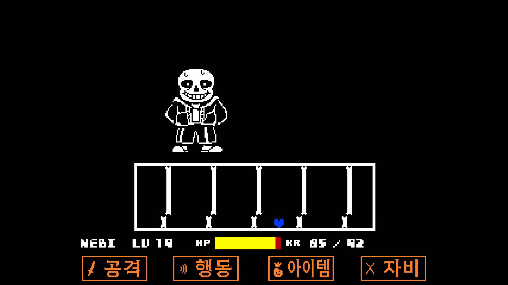
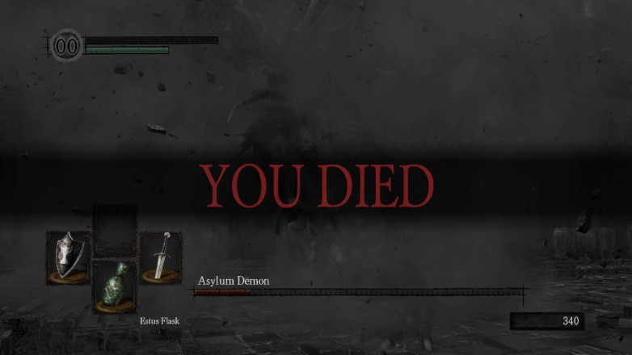
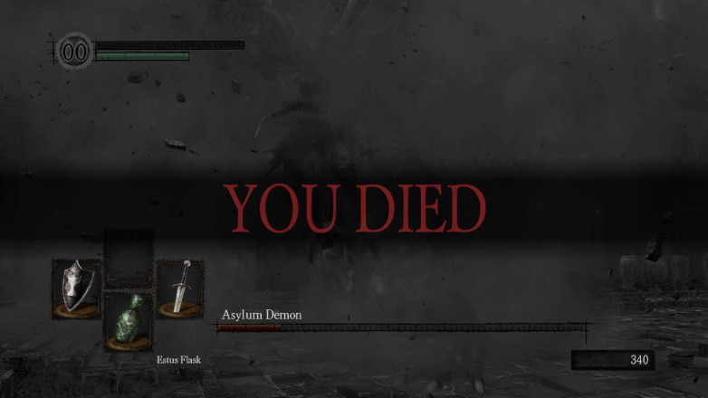
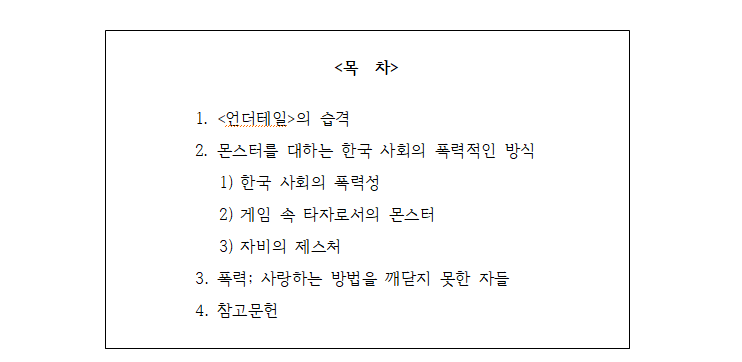
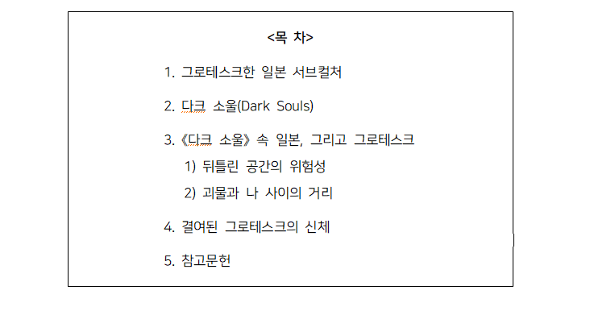

게임에 관한 서술들 (2015~2017)

 


언더테일
사일런트 힐
다크소울
게임을 주제로 작성한 소논문들,
그 외의 짤막한 감상에 대한 기록
<타자에 대한 한국 사회의 폭력성>
- 게임 <사일런트 힐>과 <언더테일>이 몬스터를 대하는 방식 -

"(...) 타인을 조건 없이 사랑하는 일은 어렵다.
그러나 <언더테일>이라는 게임 속에 있는 지하 세계에서
플레이어들은 무자비하고 거대한 폭력의 주체가 아닌,
끊임없는 소통과 제스처의 주체가 되는 경험을 겪는다.
축적된 폭력의 경험을 통해 무감각을 학습한 현실과 달리,
누군가를 조건 없이 사랑해야 되는 주체로서의 경험을 계속해서 쌓아나간다.
‘타자’를 몬스터로 대하지 않는 방식을 택하는 것,
즉 몬스터는 그저 나와 ‘차이’가 있을 뿐
서로 간의 관계를 맺는 데에 그 차이가 영향을 미치지 않을 것이라는 그 믿음은
서로 간의 관계 형성의 과정에서 ‘나’와 ‘타자’의 철저한 분리와
그 분리를 통해 발생하는 무의미한 폭력을 지워낸다. (...)"
<현대 일본 속 그로테스크한 괴물들의 서사>
- 게임 <다크 소울> 속 그로테스크에 관하여 -

"(...) 그러나 《다크 소울》은 이러한 일본 문화의 그로테스크에 1990년대 이후라는 시공간이 더해진다.
기존 자신이 가지고 있던 일본 서브컬처의 현실 인식 방법에 현재 우리를 휩싸고 있는 해결불가능성의 공포를 뒤섞는다.
그 결과, 우리는 원래 우리가 어둠을 가진 존재라는 것을 알아냈지만 그 과정에서 우리의 몸은 괴물이 되었다.
어둠을 가졌지만, 그 어둠을 깨닫는 과정에서 스스로 선과 악의 경계를 뒤흔드는 존재가 되었다.
우리가 선한지, 악한지를 구분하는 질문은 의미가 없어졌다.
우리는 스스로 괴물(monster)이 됨으로써 언젠가 “다가올 것의 조짐”이자 그 공포를 “가리키는 존재”가 되었다.
경계는 불분명해졌고 이곳이 일상공간인지, 이계인지 우리는 알 수 없다.
끊임없이 창궐하는 그로테스크의 이미지만이 우리가 현재 도무지 무엇인지 파악조차 못 할 문제가
해결불가능하다는 사실과 그 사실이 가져다주는 공포의 감각,
그리고 우리의 세계는 이미 기형적으로 뒤틀려 설명할 수 없는 파편들의 혼합으로 이루어졌다는 사실만을 알려줄 뿐이다.